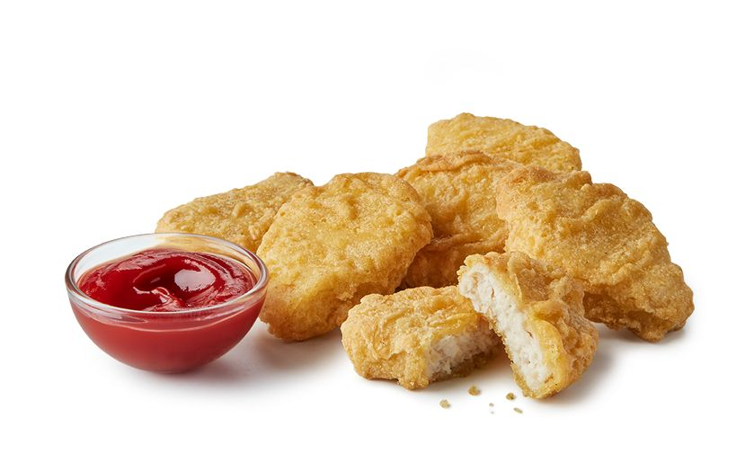

McNuggets

The McNuggets are a staple of the McDonalds menu. They are essentially just pieces of white chicken meat cooked into (you guessed it) nuggets!
To make them, just follow the ingredients list and steps below
Ingredients
- Ground chicken
- Eggs
- Salt
- Cornstarch
- Water
- Onion powder
- Garlic Powder
- Paprika
- Pepper
- Flour
- Vegetable oil
Steps
- In a food processor or mixer, blend the chicken, 1 egg and salt until chicken
resembles a paste.
- Dredge the nuggets in cornstarch until fully coat. Set aside.
- In a mixing bowl, mix the flour, seasonings, 1 egg and water. Mix well until a smooth batter forms.
- Place a nugget onto a fork. This will make it easy to dip into the batter.
- Dip it into the batter. Let excess batter drip off
- In a saucepan or deep skillet, bring oil to 350°F.
Working in batches of 5, fry nuggets for 3 minutes or until nuggets are floating.
- Remove nuggets with a slotted spoon and place on a paper towel lined plate for 1 minute.
Continue until all nuggets are done.
Return nuggets to oil for 2 more minutes to double fry.
- Allow nuggets to slightly cool before eating.